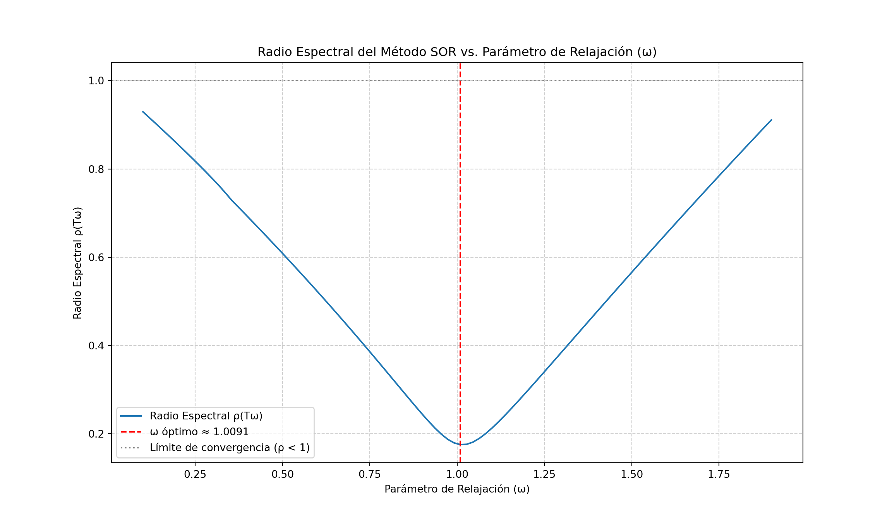

Álgebra Lineal Numérica
José Luis Ramírez
Octubre 2025
1 Motivación
- En el planteamiento matemático de muchos problemas realistas, los sistemas de ecuaciones algebraicas, y de una manera especial los lineales, aparecen de manera natural.
- La búsqueda de métodos de resolución de sistemas de ecuaciones lineales es un tema de gran importancia en la ciencia.
- El objetivo de este tema es desarrollar estrategias numéricas que permitan resolver sistemas de ecuaciones relativamente grandes de una manera eficiente.
- El estudio de los autovalores de sistemas surge por doquier en
muchas áreas de la ciencia, ingeniería, economía …
- Análisis de estructuras
- Diseño de sistemas electrónicos
- Análisis de sistemas eléctricos
- Mercados financieros.
- Es también muy importante para analizar el comportamiento de métodos numéricos.
2 Solución de Sistemas de Ecuaciones Lineales
- El objetivo de este tema es desarrollar estrategias numéricas que permitan resolver sistemas de ecuaciones relativamente grandes de una manera eficiente.
- Además, se analizarán con detalle algunos métodos directos.
- Si bien existen métodos exactos como el método de Cramer, estos son muy costosos de aplicar en situaciones donde los sistemas a resolver tienen muchas ecuaciones.
- El número total de operaciones para resolver un sistema de dimensión \(n\) con este método es
\[ T_C = (n+1)^2n!-1 \] \[ \begin{array}{|c|c|}\hline n & T_C \\\hline 5 & 4319\\\hline 10 & 4\times10^{8}\\\hline 100 & 10\times10^{158}\\\hline \end{array} \]
2.1 Introducción
- Un sistema de \(n\)-ecuaciones (con coeficientes reales) en las \(n\)-incógnitas \(x_1, x_2, \ldots , x_n\) es un conjunto de \(n\) ecuaciones de la forma:
\[ \left\{ \begin{array}{rclclc} a_{11}x_{1} & + & a_{12}x_{2} & + \cdots + & a_{1n}x_{n} & = b_{1} \\ a_{21}x_{1} & + & a_{22}x_{2} & + \cdots + & a_{2n}x_{n} & = b_{2} \\ \cdots & & \cdots & \cdots & \cdots & \cdots \\ a_{n1}x_{1} & + & a_{n2}x_{2} & + \cdots + & a_{nn}x_{n} & = b_{n} \end{array} \right. \]
- A los números \(a_{ij}\) se les denomina coeficientes del sistema y a los \(b_i\) términos independientes.
Si se introducen las matrices
\[ A = \begin{pmatrix} a_{11} & a_{12} & \cdots & a_{1n} \\ a_{21} & a_{22} & \cdots & a_{2n} \\ \vdots & \vdots & \ddots & \vdots \\ a_{n1} & a_{n2} & \cdots & a_{nn} \end{pmatrix}, \quad x = \begin{pmatrix} x_{1} \\ x_{2} \\ \vdots \\ x_{n} \end{pmatrix}, \quad b = \begin{pmatrix} b_{1} \\ b_{2} \\ \vdots \\ b_{n} \end{pmatrix} \]
- El sistema de ecuaciones puede escribirse de forma matricial como
\[ Ax = b \]
2.1.1 Clasificación
Podemos clasificar los sistemas de ecuaciones lineales atendiendo a:
- Su tamaño:
- Pequeños: \(n \leq 300\) donde \(n\) representa el número de ecuaciones.
- Grandes: \(n > 300\)
- Su estructura
- Si la matriz posee pocos elementos nulos diremos que se trata de un sistema lleno.
- Si, por el contrario, la matriz contiene muchos elementos nulos, diremos que la matriz, y por lo tanto, el sistema lineal es disperso o sparce.
2.1.2 Solución
La primera opción que se plantea es
\[ x = A^{-1}b \]
- No es eficiente (demasiadas operaciones).
- Si el determinante de \(A\) es próximo a cero, el error de redondeo puede ser muy grande, y esto es dificil de estimar numéricamente
\[ \det(\gamma A) = \gamma^n \det(A) \]
- Por lo tanto, se hace necesario desarrollar métodos numéricos que permitan resolver sistemas de ecuaciones lineales de una manera eficiente y con un control del error cometido.
2.2 Métodos directos
2.2.1 Sistemas triangulares
- Un sistema de ecuaciones lineales se dice que es triangular superior si su matriz de coeficientes \(A\) es una matriz triangular superior, es decir, si todos los elementos situados por debajo de la diagonal principal son nulos.
\[ \left\{\begin{array}{r} a_{11}x_1 + a_{12}x_2 + \cdots + a_{1i}x_i + \cdots + a_{1n}x_n = b_1 \\ a_{22}x_2 + \cdots + a_{2i}x_i + \cdots + a_{2n}x_n = b_2 \\ \vdots \\ a_{ii}x_i + \cdots + a_{in}x_n = b_i \\ \vdots \\ a_{nn}x_n = b_n\\ \end{array}\right. \]
- Como \(a_{n,n} \ne 0\), se puede despejar \(x_n\) de la última ecuación, y se obtiene:
\[ x_n = \dfrac{b_n}{a_{nn}} \]
- Sustituyendo este valor en la ecuación \(n-1\) y despejando \(x_{n-1}\) se tiene:
\[x_{n-1} = \dfrac{b_{n-1} - a_{n-1,n}x_n}{a_{n-1,n-1}}\]
- Continuando este proceso, se obtiene la siguiente fórmula de recurrencia para \(i = n-1, n-2, \ldots, 1\):
\[x_i = \dfrac{b_i - \displaystyle\sum_{j=i+1}^{n} a_{ij}x_j}{a_{ii}}\]
- Este proceso de resolución de sistemas triangulares superiores se denomina sustitución regresiva.
FUNCION Sustitucion_Regresiva(A, b):
n = dimension de A (número de filas)
# 1. Resolver la última incógnita (x_n)
x[n] = b[n] / A[n, n]
# 2. Iteración regresiva (desde n-1 hasta 1)
PARA i = n-1 HASTA 1:
suma = 0
PARA j = i+1 HASTA n:
suma = suma + A[i, j] * x[j]
FIN PARA
x[i] = (b[i] - suma) / A[i, i]
FIN PARA
RETORNAR xFIN FUNCION
import numpy as np
def sustitucion_regresiva(A, b):
n = len(b)
x = np.zeros(n)
x[n-1] = b[n-1] / A[n-1, n-1]
for i in range(n-2, -1, -1):
suma = np.dot(A[i, i+1:], x[i+1:])
x[i] = (b[i] - suma) / A[i, i]
return x- En el caso de sistemas triangulares inferiores, el proceso es análogo, pero se realiza una sustitución progresiva.
- La fórmula de recurrencia para \(i = 1, 2, \ldots, n-1, n\) es:
\[x_i = \dfrac{b_i - \displaystyle\sum_{j=1}^{i-1} a_{ij}x_j}{a_{ii}}\]
- El proceso de resolución de sistemas triangulares inferiores se denomina sustitución progresiva.
FUNCION Sustitucion_Progresiva(A, b):
n = dimension de A (número de filas)
# 1. Resolver la primera incógnita (x_1)
x[1] = b[1] / A[1, 1]
# 2. Iteración progresiva (desde 2 hasta n)
PARA i = 2 HASTA n:
suma = 0
PARA j = 1 HASTA i-1:
suma = suma + A[i, j] * x[j]
FIN PARA
x[i] = (b[i] - suma) / A[i, i]
FIN PARA
RETORNAR xFIN FUNCION
2.2.2 Eliminación Gaussiana
- Suponiendo que \(A\) no posee una estructura triangular, y es tal que no requiere intercambio de filas para transformar el sistema original en otro equivalente que sí la posea forma triangular.
- Una forma de resolver el sistema es transformar la matriz \(A\) en una matriz triangular superior \(U\) mediante operaciones elementales sobre las filas de la matriz.
- Digamos que el sistema original es:
\[ Ax = b \equiv \left\{ \begin{array}{l} E_1: a_{11}x_{1} + a_{12}x_{2} + \cdots + a_{1n}x_{n} = b_{1} \\ E_2: a_{21}x_{1} + a_{22}x_{2} + \cdots + a_{2n}x_{n} = b_{2} \\ \cdots \cdots \cdots \cdots \cdots \cdots \cdots\\ E_n: a_{n1}x_{1} + a_{n2}x_{2} + \cdots + a_{nn}x_{n} = b_{n} \end{array} \right. \]
- Para eliminar la incógnita \(x_1\) de las ecuaciones \(E_2, E_3, \ldots, E_n\), se pueden realizar las siguientes operaciones elementales sobre las filas:
\[ E_i \leftarrow E_i - \dfrac{a_{i1}}{a_{11}} E_1 \quad \text{para } i = 2, 3, \ldots, n \]
- Los números \(\dfrac{a_{i1}}{a_{11}}\) se denominan multiplicadores de eliminación.
- Después de aplicar estas operaciones, se obtiene un nuevo sistema equivalente:
\[ A^{(1)}x = b^{(1)} \equiv \left\{ \begin{array}{l} E_1: a_{11}x_{1} + a_{12}x_{2} + \cdots + a_{1n}x_{n} = b_{1} \\ E_2: 0 + a_{22}^{(1)}x_{2} + \cdots + a_{2n}^{(1)}x_{n} = b_{2}^{(1)} \\ \cdots \cdots \cdots \cdots \cdots \cdots \cdots\\ E_n: 0 + a_{n2}^{(1)}x_{2} + \cdots + a_{nn}^{(1)}x_{n} = b_{n}^{(1)} \end{array} \right. \]
- Repitiendo este proceso para las incógnitas \(x_2, x_3, \ldots, x_{n-1}\), se obtiene finalmente un sistema triangular superior:
\[ Ux = y \equiv \left\{ \begin{array}{l} E_1: u_{11}x_{1} + u_{12}x_{2} + \cdots + u_{1n}x_{n} = y_{1} \\ E_2: 0 + u_{22}x_{2} + \cdots + u_{2n}x_{n} = y_{2} \\ \cdots \cdots \cdots \cdots \cdots \cdots \cdots\\ E_n: 0 + 0 + \cdots + u_{nn}x_{n} = y_{n} \end{array} \right. \]
- Donde \(U\) es una matriz triangular superior y \(y\) es el nuevo vector de términos independientes.
- La solución del sistema original \(Ax = b\) se obtiene resolviendo primero el sistema triangular superior \(Ux = y\) mediante sustitución regresiva.
FUNCION Eliminacion_Gauss(A, b):
n = dimension de A (número de filas)
# 1. Eliminación hacia adelante
PARA k = 1 HASTA n-1:
PARA i = k+1 HASTA n:
multiplicador = A[i, k] / A[k, k]
A[i, k] = 0 # Elemento eliminado
PARA j = k+1 HASTA n:
A[i, j] = A[i, j] - multiplicador * A[k, j]
FIN PARA
b[i] = b[i] - multiplicador * b[k]
FIN PARA
FIN PARA
RETORNAR A, bFIN FUNCION
2.2.2.1 Ejemplo 1:
Resolver el sistema de ecuaciones lineales utilizando el método de eliminación de Gauss: \[ \left\{ \begin{array}{rcl} 2x_1 + x_2 + x_3 & = & -3 \\ x_1 -2x_2 + 3x_3 & = & 6 \\ x_1 - x_2 - x_3 & = & 6 \end{array} \right. \]
import numpy as np
A = np.array([[2, 1, 1],
[1, -2, 3],
[1, -1, -1]], dtype=float)
b = np.array([-3, 6, 6], dtype=float)
def eliminacion_gauss(A, b):
n = len(b)
for k in range(n-1):
for i in range(k+1, n):
multiplicador = A[i, k] / A[k, k]
A[i, k] = 0 # Elemento eliminado
for j in range(k+1, n):
A[i, j] = A[i, j] - multiplicador * A[k, j]
b[i] = b[i] - multiplicador * b[k]
return A, b
A_triangular, b_modificado = eliminacion_gauss(A, b)
print("Matriz triangular superior U:")## Matriz triangular superior U:print(A_triangular)## [[ 2. 1. 1. ]
## [ 0. -2.5 2.5]
## [ 0. 0. -3. ]]print("Vector modificado y:")## Vector modificado y:print(b_modificado)## [-3. 7.5 3. ]def sustitucion_regresiva(A, b):
n = len(b)
x = np.zeros(n)
x[n-1] = b[n-1] / A[n-1, n-1]
for i in range(n-2, -1, -1):
suma = np.dot(A[i, i+1:], x[i+1:])
x[i] = (b[i] - suma) / A[i, i]
return x
solucion = sustitucion_regresiva(A_triangular, b_modificado)
print("Solución del sistema:")## Solución del sistema:print(solucion)## [ 1. -4. -1.]2.2.3 Estrategias de Pivoteo
- Pivoteo Parcial
- En la eliminación gaussiana, es posible que durante el proceso de eliminación se encuentren elementos pivote que sean cero o muy pequeños, lo que puede llevar a errores numéricos significativos.
2.2.3.1 Ejemplo 2:
Considere el siguiente sistema de ecuaciones lineales en una aritmética de punto flotante a 4 dígitos con redondeo correcto: \[ \left\{ \begin{array}{rcl} 0.003000x_1 + 59.14x_2 & = & 59.17 \\ 5.291x_1 - 6.130x_2 & = & 46.78 \end{array} \right. \]
cuya solución exacta es \(x_1 = 10\) y \(x_2 = 1\).
- Aplicando la eliminación gaussiana sin pivoteo, se obtiene el siguiente resultado \(\tilde{x}_1=-10.00\) y \(\tilde{x}_2=1.001\).
- El error relativo en la solución es:
\[ \begin{array}{l} \text{Error relativo en } x_1 = \dfrac{|\tilde{x}_1 - x_1|}{|x_1|} = \dfrac{|-10.00 - 10|}{|10|} = 2.0 \\ \text{Error relativo en } x_2 = \dfrac{|\tilde{x}_2 - x_2|}{|x_2|} = \dfrac{|1.001 - 1|}{|1|} = 0.001 \end{array} \]
- El error tan grande de la solución numérica de \(x_1\), resulta del error pequeño de \(0.001\) al resolver para \(x_2\).
- Ahora, si se elige como pivote el máximo entre \(a_{1,1}\) y \(a_{2,1}\).
- Pivote =max(|0.003|; |5.291|) = 5.291, por tanto se realiza un intercambio de filas quedando el sistema de la siguiente manera:
\[ \left\{ \begin{array}{rcl} 5.291x_1 − 6.130x_2 &=& 46.78\\ 0.003000x_1 + 59.14x_2 &=& 59.17 \end{array}\right. \]
cuya solución aproximada es \(\tilde{x}_2 = 1 = x_2\) y \(\tilde{x}_1 = 10 = x_1\).
Por tanto para cada paso de eliminación Gaussiana tenemos que:
- Seleccionar como pivote el elemento de mayor valor absoluto en la columna correspondiente, desde la fila actual hasta la última fila.
- Intercambiar la fila actual con la fila que contiene el pivote seleccionado.
\[ \text{Pivoteo parcial: } \quad E_i \leftrightarrow E_p \quad \text{donde } p = \underset{i \leq k \leq n}{\mathrm{argmax}} |a_{k,i}| \]
Pivoteo Parcial Escalado
Modificando ligeramente el pivotaje parcial de la siguiente forma.
Concretamente, en primer lugar, se calcula el valor máximo en valor absoluto de cada fila \(i\)-ésima de la matriz del sistema a resolver \(A\), \(n\times n\):
\[ s_i = \max_{1 \leq j \leq n} |a_{ij}| \quad \text{para } i = 1, 2, \ldots, n \]
*Dichos valores \(s_i\) sólo se calculan una vez al principio del algoritmo y no aumentan demasiado el coste computacional del mismo.
- A continuación, imaginemos que estamos en el \(k\)-ésimo pase del algoritmo de Gauss. Entonces, en lugar de hallar el máximo de \(|a^{(k)}_{ji}|\) desde \(j=k\) hasta \(j=n\), se halla el máximo de \(\left|\frac{a^{(k)}_{ji}}{s_j}\right|\) desde \(j=i\) hasta \(j=n\):
\[ \max_{k \leq j \leq n} \left|\dfrac{a^{(k)}_{ji}}{s_j}\right| \]
- Es decir, “escalamos” cada fila por el valor \(s_j\) y hallamos el máximo de los valores escalados.
- Llamemos \(j_{\max}\) a dicho valor.
- Igual que en el pivoto parcial, realizamos un cambio entre las filas \(k\) y \(j_{\max}\): \(E_k \leftrightarrow E_{j_{\max}}\).
- El pivoteo parcial escalado es especialmente útil cuando los elementos de la matriz del sistema varían mucho en magnitud.
2.2.3.2 Ejemplo 3:
Resolvamos el siguiente sistema usando pivotaje parcial escalado:
\[ \left\{ \begin{array}{rrrrrrcr} E_1: & x_1 & + x_2 & - 3x_3 & -x_4 & -2x_5 & = & 2 \\ E_2: & x_1 & + 2x_2 & + 2x_3 & & + 3x_5 & = & 2 \\ E_3: & x_1 & -x_2 & +3x_3 & +2x_4 & - x_5 & = & 2 \\ E_4: & & x_2 & & + 4x_4 & -x_5 & = & 3 \\ E_5: & x_1 & + 3x_2 & + x_3 & & + 5x_5 & = & 1 \\ \end{array} \right. \]
Los valores \(s_i\) son en este caso: \[ s_1 = 3, \quad s_2 = 3, \quad s_3 = 3, \quad s_4 = 4, \quad s_5 = 5 \] * Primer paso (no se ha realizado ningún cambio de filas ya que el máximo valor entre los valores \[ \left|\dfrac{1}{3}\right|, \left|\dfrac{1}{3}\right|, \left|\dfrac{1}{3}\right|, 0, \left|\dfrac{1}{5}\right| \]
es \(\dfrac{1}{3}\). Aplicamos la eliminación gaussiana para obtener:
\[ A^{(1)} = \begin{pmatrix} 1 & 1 & -3 & -1 & -2 \\ 0 & 1 & 5 & 1 & 5 \\ 0 & -2 & 6 & 3 & 1 \\ 0 & 1 & 0 & 4 & -1 \\ 0 & 2 & 4 & 1 & 7 \end{pmatrix}, \quad b^{(1)} = \begin{pmatrix} 2 \\ 0 \\ 0 \\ 3 \\ -1 \end{pmatrix} \]
- Segundo paso (cambiando las filas 2 y 3 ya que el máximo valor entre los valores \[ \left|\dfrac{1}{5}\right|, \left|\dfrac{-2}{6}\right|, \left|\dfrac{1}{4}\right|, \left|\dfrac{2}{7}\right| \] es \(\dfrac{2}{6}=\dfrac{1}{3}\). Aplicamos la eliminación gaussiana para obtener:
\[ A^{(2)} = \begin{pmatrix} 1 & 1 & -3 & -1 & -2 \\ 0 & -2 & 6 & 3 & 1 \\ 0 & 0 & 8 & 2.5 & 5.5 \\ 0 & 0 & 3 & 5.5 & -0.5 \\ 0 & 0 & 10 & 4 & 8 \end{pmatrix}, \quad b^{(2)} = \begin{pmatrix} 2 \\ 0 \\ 0 \\ 3 \\ -1 \end{pmatrix} \]
- Tercer paso (no hay cambio de filas ya que el máximo valor entre los valores \[ \left|\dfrac{8}{8}\right|, \left|\dfrac{3}{5.5}\right|, \left|\dfrac{10}{10}\right| \] es \(\dfrac{8}{8}=1\). Aplicamos la eliminación gaussiana para obtener:
\[ A^{(3)} = \begin{pmatrix} 1 & 1 & -3 & -1 & -2 \\ 0 & -2 & 6 & 3 & 1 \\ 0 & 0 & 8 & 2.5 & 5.5 \\ 0 & 0 & 0 & 4.5625 & -2.5625\\ 0 & 0 & 0 & 0.8750 & 1.1250 \end{pmatrix}, \quad b^{(3)} = \begin{pmatrix} 2 \\ 0 \\ 0 \\ 3 \\ -1 \end{pmatrix} \]
- Cuarto paso (no hay cambio de filas ya que el máximo valor entre los valores \[ \left|\dfrac{4.5625}{4.5625}\right|, \left|\dfrac{0.875}{1.5}\right| \] es \(\dfrac{4.5625}{4.5625}=1\). Aplicamos la eliminación gaussiana para obtener:
\[ U = A^{(4)} = \begin{pmatrix} 1 & 1 & -3 & -1 & -2 \\ 0 & -2 & 6 & 3 & 1 \\ 0 & 0 & 8 & 2.5 & 5.5 \\ 0 & 0 & 0 & 4.5625 & -2.5625\\ 0 & 0 & 0 & 0 & 1.6164 \end{pmatrix}, \quad y = b^{(4)} = \begin{pmatrix} 2 \\ 0 \\ 0 \\ 3 \\ -1.5753 \end{pmatrix} \]
- Finalmente, resolvemos el sistema triangular superior \(Ux = y\) mediante sustitución regresiva para obtener la solución del sistema original:
\[ \begin{align*} x_5 & = \dfrac{-1.5753}{1.6164} \approx -0.97457 \\ x_4 & = \dfrac{3 - (-2.5625)(-0.97457)}{4.5625} \approx 0.11018 \\ x_3 & = \dfrac{0 - 2.5(0.11018) - 5.5(-0.97457)}{8} \approx 0.63559 \\ x_2 & = \dfrac{0 - 6(0.63559) - 3(0.11018)-1(-0.97457)}{-2} \approx 1.5848 \\ x_1 & = 2 - 1(1.5848) - (-3)(0.63559) - (-1)(0.11018) - (-2)(-0.97457) \approx 0.48310 \end{align*} \]
- Pivoteo Completo o Total
- Una manera de optimizar el error de redondeo cometido cuando
aplicamos el algoritmo de Gauss es realizar un pivotaje global: -es
decir, modificar el algoritmo de Gauss en el \(k\)-ésimo paso eligiendo el máximo valor en
valor absoluto de la submatriz de \(A^(k)\) formada por las filas \(k,k+1,\ldots,n\) y por las columnas \(k,k+1,\ldots,n\).
- Concretamente hallamos \(i_{\max}\),\(j_{\max}\) tal que:
\[ \left|a^{(k)}_{i_{\max},j_{\max}}\right| = \max_{i,j=k,\ldots,n}\left|a^{(k)_{i,j}}\right| \]
- A continuación, realizamos un cambio entre las filas \(k\) y \(i_{\max}\) y un cambio entre las columnas \(k\) y \(j_{\max}\).
- Permutar filas no afecta a las soluciones del sistema de ecuaciones al obtener un sistema de ecuaciones equivalente. Sin embargo, permutar columnas equivale a permutar los valores de las variables correspondientes.
- Concretamente, cuando cambiamos las columnas \(k\) y \(j_{\max}\), intercambiamos el “papel” de las variables \(x_k\) y \(x_{j_{\max}}\).
- Por tanto, necesitamos recordar todos los cambios de columnas para realizar el cambio inverso en la solución final.
2.2.3.3 Ejemplo 4
Aplicando esta tecnica de pivoteo al ejemplo anterior
\[ \left\{ \begin{array}{rrrrrrcr} E_1: & x_1 & + x_2 & - 3x_3 & -x_4 & -2x_5 & = & 2 \\ E_2: & x_1 & + 2x_2 & + 2x_3 & & + 3x_5 & = & 2 \\ E_3: & x_1 & -x_2 & +3x_3 & +2x_4 & - x_5 & = & 2 \\ E_4: & & x_2 & & + 4x_4 & -x_5 & = & 3 \\ E_5: & x_1 & + 3x_2 & + x_3 & & + 5x_5 & = & 1 \\ \end{array} \right. \equiv \left(\begin{array}{rrrrr|r} 1 & 1 & -3 & -1 & -2 & 2\\ 1 & 2 & 2 & 0 & 3 & 2\\ 1 & -1 & 3 & 2& -1 & 2\\ 0 & 1 & 0 & 4 & -1 & 3\\ 1 & 3 & 1 & 0 & 5 & 1\\ \end{array}\right) \]
- Paso 1. El máximo valor de la submatriz del sistema formada por las 5 primeras filas y columnas vale 5 que corresponde a la fila 5 y a la columna 5. Entonces permutamos la fila 1 con la 5 y a continuación la columna 1 con la 5 y aplicamos el algoritmo de Gauss obteniendo la matriz siguiente:
\[ A^{(1)}=\left(\begin{array}{rrrrr|r} 5 & 3 & 1 & 0 & 1 & 1\\ 0 & 0.2 & 1.4 & 0 & 0.4 & 1.4\\ 0 & -0.4 & 3.2 & 2 & 1.2 & 2.2\\ 0 & 1.6 & 0.2 & 4 & 0.2 & 3.2\\ 0 & 2.2 & -2.6 & -1 & 1.4 & 2.4 \end{array}\right) \]
Las variables del sistema anterior quedan en el siguiente orden \(x_5\), \(x_2\), \(x_3\), \(x_4\) y \(x_1\).
Paso 2. El máximo valor de la submatriz del sistema formada por las 4 últimas filas y columnas vale 4 que corresponde a la fila 4 y a la columna 4. Entonces permutamos la fila 2 con la 4 y a continuación la columna 2 con la 4 y aplicamos el algoritmo de Gauss obteniendo la matriz siguiente:
\[ A^{(2)}=\left(\begin{array}{rrrrr|r} 5 & 0 & 1 & 3 & 1 & 1\\ 0 & 4 & 0.2 & 1.6 & 0.2 & 3.2\\ 0 & 0 & 3.1 & -1.2 & 1.1 & 0.6\\ 0 & 0 & 1.4 & 0.2 & 0.4 & 1.4\\ 0 & 0 & -2.55 & 2.6 & 1.45 & 3.2 \end{array} \right) \]
Las variables del sistema anterior son las siguientes \(x_5\), \(x_4\), \(x_3\), \(x_2\) y \(x_1\).
Paso 3. El máximo valor de la submatriz del sistema formada por las 3 últimas filas y columnas vale \(3.1\) que corresponde a la fila 3 y a la columna 3. Entonces no realizamos ninguna permutación y aplicamos el algoritmo de Gauss obteniendo la matriz siguiente:
\[ A^{(3)}\left( \begin{array}{rrrrr|r} 5 & 0 & 1 & 3 & 1 & 1\\ 0 & 4 & 0.2 & 1.6 & 0.2 & 3.2\\ 0 & 0 & 3.1 & -1.2 & 1.1 & 0.6\\ 0 & 0 & 0 & 0.74194 & -0.096774 & 1.1290\\ 0 & 0 & 0 & 1.6129 & 2.3548 & 3.6935\\ \end{array} \right) \]
- Paso 4. El máximo valor de la submatriz del sistema formada por las 2 últimas filas y columnas vale \(2.3548\) que corresponde a la fila 5 y a la columna 5. Entonces permutamos la fila 4 con la 5 y a continuación la columna 4 con la 5 y aplicamos el algoritmo de Gauss obteniendo la matriz siguiente:
\[ A^{(4)}\left(\begin{array}{rrrrr|r} 5 & 0 & 1 & 1 & 3 & 1\\ 0 & 4 & 0.2 & 0.2 & 1.6 & 3.2\\ 0 & 0 & 3.1 & 1.1 & -1.2 & 0.6\\ 0 & 0 & 0 & 2.3548 & 1.6129 & 3.6935\\ 0 & 0 & 0 & 0 & 0.80822 & 1.2808 \end{array}\right) \]
Las variables del sistema anterior son las siguientes \(x_5\), \(x_4\), \(x_3\), \(x_1\) y \(x_2\).
La solución del sistema será usando el método de sustitución hacia atrás:
\[ \begin{align*} x_2 & = \dfrac{1.2808}{0.80822} \approx 1.5847 \\ x_1 & = \dfrac{3.6935 - 1.6129(1.5847)}{2.3548} \approx 0.48306 \\ x_3 & = \dfrac{0.6 - (1.1)(0.48306) +1.2 (1.5847)}{3.1} \approx 0.63555 \\ x_4 & = \dfrac{3.2 - 0.2(0.63555) - 0.2(0.48306) - 1.6(1.5847)}{4.0} \approx 0.11020 \\ x_5 & = \dfrac{1 - 0(0.11020) - 1(0.63555) - 1(0.48306) - 3(1.5847)}{0.5} \approx -0.97456 \end{align*} \]
2.2.4 Conteo de operaciones
- El número total de operaciones (sumas, restas, multiplicaciones y divisiones) necesarias para resolver un sistema de \(n\) ecuaciones con \(n\) incógnitas mediante el método de eliminación gaussiana es aproximadamente:
\((+/-)\) \[ \sum_{k=1}^{n-1} ((n-k)^2 + (n-k)) = \dfrac{1}{3}n^3 - \dfrac{1}{3}n \approx \mathcal{O}(n^3) \] \((×/÷)\) \[ \sum_{k=1}^{n-1} (2(n-k) + (n-k)^2) = \dfrac{2n^3+3n^2-5n}{6} \approx \mathcal{O}(n^3) \]
2.2.5 Número de condición
- ¿Cómo se evalua el buen o mal condicionamiento de la matriz de coeficientes?
- El número de condioción de una matriz permite cuantificar su nivel de condicionamiento.
- El número de condición de una matriz \(A\) se define como:
\[\kappa(A) = ||A|| \cdot ||A^{-1}|| \]
- Donde \(||\cdot||\) denota una norma matricial.
- Si \(\kappa(A)\) es cercano a 1, la matriz está bien condicionada.
- Si \(\kappa(A)\) es grande, la matriz está mal condicionada.
2.2.5.1 Ejemplo 5:
Calcular el número de condición de la siguiente matriz utilizando la norma 2: \[A = \begin{pmatrix} 2 & 3.01 \\ 4 & 6 \end{pmatrix}\]
import numpy as np
A = np.array([[2, 3.01],
[4, 6]], dtype=float)
def numero_de_condicion(A):
norma_A = np.linalg.norm(A, 2)
norma_A_inv = np.linalg.norm(np.linalg.inv(A), 2)
kappa = norma_A * norma_A_inv
return kappa
kappa_A = numero_de_condicion(A)
print("Número de condición de A:", kappa_A)## Número de condición de A: 1626.501885183655# Alternativamente, usando la función cond de NumPy
print(np.linalg.cond(A, 2))## 1626.5018851838065- Una cota válida para el nuúmero de condición es:
\[\kappa(A) \geq 1 \]
- Si \(\kappa(A)\) es muy grande, pequeños errores en los datos de entrada pueden provocar grandes errores en la solución del sistema.
2.3 Descomposición de Matrices
- Al aplicar el método de Gauss al sistema \(Ax = b\) se realizan transformaciones elementales para triangularizar la matriz del sistema.
- Si este proceso puede realizarse sin intercambios de filas, la matriz triangular superior \(U\) obtenida viene determinada por el producto de un número finito de transformaciones filas \(N_{n−1}N_{n−2}\cdots N_2N_1\) aplicadas a la matriz \(A\). Llamando \(L^{−1} = N_{n−1}N_{n−2}\cdots N_2N_1\) se tiene que
\[ L^{−1}A = U \Rightarrow A = LU. \]
- Además \(L\) es una matriz triangular inferior con unos en la diagonal.
- Entonces para resolver el sistema \(Ax =
b\), sabiendo que \(A\) posee
descomposición \(LU\), debemos hacer lo
siguiente:
- \(Ax = b \Rightarrow LUx = b\), llamando \(z\) al producto \(Ux\) tenemos que:
- \(Lz = b \Rightarrow\) sustitución progresiva.
- \(Ux = z \Rightarrow\) sustitución regresiva.
Si \(A\) es estrictamente diagonal dominante entonces \(A\) admite una descomposición \(LU\) que se obtiene mediante el proceso de eliminación Gaussiana.
Se dice que una matriz \(A\) es diagonalmente dominante si \[ |a_{ii}| > \sum_{\substack{j=1 \\ j \ne i}}^{n} |a_{ij}| \quad \text{para } i = 1, 2, \ldots, n \]
FUNCION Factorizacion_LU_Doolittle(A): # Asume que A es una matriz cuadrada (n x n) n = dimension de A (número de filas) L = Matriz Identidad n x n U = Matriz n x n (copia de A, que será modificada)
# El algoritmo se ejecuta en A y sus elementos modificados forman L y U.
# Por simplicidad, calculamos U in-place en A y L en una matriz separada.
PARA k = 1 HASTA n:
# 1. Cálculo de U_{k,k} (Elemento Pivote de la fila k)
# u_{k,k} = a_{k,k} - SUM_{p=1}^{k-1} l_{k,p} * u_{p,k}
# El elemento pivote u_kk ya está en A[k,k] si no hay pivoteo parcial.
# 2. CÁLCULO DE LA FILA k DE U: (j = k+1 hasta n)
PARA j = k+1 HASTA n:
# u_{k,j} = a_{k,j} - SUM_{p=1}^{k-1} l_{k,p} * u_{p,j}
suma_U = 0
PARA p = 1 HASTA k-1:
suma_U = suma_U + L[k, p] * U[p, j]
FIN PARA
U[k, j] = A[k, j] - suma_U # Guardamos el resultado en U
FIN PARA
# 3. CÁLCULO DE LA COLUMNA k DE L: (i = k+1 hasta n)
# L_{i,k} = (1 / U_{k,k}) * [ a_{i,k} - SUM_{p=1}^{k-1} l_{i,p} * u_{p,k} ]
SI U[k, k] es CASI CERO ENTONCES
RETORNAR "Falla: Pivoteo necesario o matriz singular."
FIN SI
factor = 1.0 / U[k, k]
PARA i = k+1 HASTA n:
# l_{i,k}
suma_L = 0
PARA p = 1 HASTA k-1:
suma_L = suma_L + L[i, p] * U[p, k]
FIN PARA
L[i, k] = factor * (A[i, k] - suma_L)
FIN PARA
FIN PARA
RETORNAR L, UFIN FUNCION
2.3.0.1 Ejemplo 6:
Realizar la descomposición LU de la siguiente matriz: \[A = \begin{pmatrix} 1 & 2 & 0 \\ -1 & 1 & 3 \\ 2 & 1 & -1 \end{pmatrix}\]
import numpy as np
A = np.array([[1, 2, 0],
[-1, 1, 3],
[2, 1, -1]], dtype=float)
def factorizacion_LU_doolittle(A):
n = A.shape[0]
L = np.eye(n)
U = np.zeros((n, n))
for k in range(n):
suma_U = sum(L[k, p] * U[p, k] for p in range(k))
U[k, k] = A[k, k] - suma_U
for j in range(k+1, n):
suma_U = sum(L[k, p] * U[p, j] for p in range(k))
U[k, j] = A[k, j] - suma_U
factor = 1.0 / U[k, k]
for i in range(k+1, n):
suma_L = sum(L[i, p] * U[p, k] for p in range(k))
L[i, k] = factor * (A[i, k] - suma_L)
return L, U
L, U = factorizacion_LU_doolittle(A)
print("Matriz L:")## Matriz L:print(L)## [[ 1. 0. 0.]
## [-1. 1. 0.]
## [ 2. -1. 1.]]print("Matriz U:")## Matriz U:print(U)## [[1. 2. 0.]
## [0. 3. 3.]
## [0. 0. 2.]]print("Verificación LU:")## Verificación LU:print(np.dot(L, U))## [[ 1. 2. 0.]
## [-1. 1. 3.]
## [ 2. 1. -1.]]2.3.1 Factorización LU con Pivoteo
- En la práctica, para garantizar la estabilidad numérica del proceso de eliminación Gaussiana, es necesario incorporar el pivoteo parcial en la descomposición LU.
- Esto implica que durante el proceso de eliminación, se selecciona el pivote como el elemento de mayor valor absoluto en la columna actual, y se intercambian las filas correspondientes.
Definición de matriz de permutación. Diremos que una matriz \(P_{ij}=(p_{kl})\, k,l=1,\ldots,n\), \(n\times n\), es una matriz de permutación si
\[ p_{kl} = \begin{cases} 1, & \text{si }k=l\neq i,j,\\ 1, & \text{si }k=i,l= j,\\ 1 & \text{si }k=j, l=i,\\ 0 & \text{en caso contrario} \end{cases} \]
- Al utilizar eliminación Gaussiana con pivoteo en cada paso se introduce una matriz de permutación (que puede ser la identidad) de modo que:
\[ N_{n-1}P_{n-1}N_{n-2}P_{n-2}\cdots N_2P_2N_1P_1A = U \]
- Donde \(P_i\) es la matriz de permutación que intercambia las filas correspondientes en el paso \(i\).
- Llamando \(P = P_1P_2\cdots P_{n-1}\) y \(L^{-1} = N_{n-1}P_{n-1}N_{n-2}P_{n-2}\cdots N_2P_2N_1P_1\) se tiene que:
\[ L^{-1}A = U \Rightarrow PA = PP^{-1}LU \Rightarrow PA = LU \]
- Por lo tanto para resolver el sistema \(Ax
= b\) premultiplicando por \(P\), queda \(PAx
= Pb\), y dado que \(PA = LU\),
entonces:
- \(LUx = Pb\), llamando \(z\) al producto \(Ux\) tenemos que:
- \(Lz = Pb \Rightarrow\) sustitución progresiva.
- \(Ux = z \Rightarrow\) sustitución regresiva.
2.3.1.1 Ejemplo 7:
Realizar la descomposición \(PA=LU\) con pivoteo de la siguiente matriz: \[ A = \begin{pmatrix} 0 & 2 & 0 \\ -1 & 1 & 3 \\ 2 & 1 & -1 \end{pmatrix} \]
\[ P_1 = \begin{pmatrix} 0 & 0 & 1 \\ 0 & 1 & 0 \\ 1 & 0 & 0 \end{pmatrix} \qquad P_1A = \begin{pmatrix} 2 & 1 & -1 \\ -1 & 1 & 3 \\ 0 & 2 & 0 \end{pmatrix} \]
\[ N_1= \begin{pmatrix} 1 & 0 & 0 \\ 0.5 & 1 & 0 \\ 0 & 0 & 1 \end{pmatrix} \qquad N_1P_1A = \begin{pmatrix} 2 & 1 & -1 \\ 0 & 1.5 & 2.5 \\ 0 & 2 & 0 \end{pmatrix} \]
\[ P_2 = \begin{pmatrix} 1 & 0 & 0 \\ 0 & 0 & 1 \\ 0 & 1 & 0 \end{pmatrix} \qquad P_2N_1P_1A = \begin{pmatrix} 2 & 1 & -1 \\ 0 & 2 & 0 \\ 0 & 1.5 & 2.5 \end{pmatrix} \]
\[ N_2 = \begin{pmatrix} 1 & 0 & 0 \\ 0 & 1 & 0 \\ 0 & -0.75 & 1 \end{pmatrix} \qquad N_2P_2N_1P_1A = \begin{pmatrix} 2 & 1 & -1 \\ 0 & 2 & 0 \\ 0 & 0 & 2.5 \end{pmatrix} = U \]
\[ L^{-1} = N_2P_2N_1P_1 = \begin{pmatrix} 0 & 0 & 1 \\ 1 & 0 & 0 \\ -0.75 & 1 & 0.5 \end{pmatrix} \Rightarrow L = \begin{pmatrix} 0 & 1 & 0 \\ -0.5 & 0.75 & 1 \\ 1 & 0 & 0 \end{pmatrix} \]
\[ PA = LU \quad \text{con} \quad P = P_2P_1 = \begin{pmatrix} 0 & 0 & 1 \\ 1 & 0 & 0 \\ 0 & 1 & 0 \end{pmatrix} \qquad \]
\[ LU = \begin{pmatrix} 2 & 1 & -1 \\ 0 & 2 & 0 \\ -1 & 1 & 3 \end{pmatrix} = PA \]
2.3.2 Factorización de Cholesky
- La factorización de Cholesky es un método de descomposición de matrices que permite expresar una matriz simétrica y definida positiva como el producto de una matriz triangular inferior y su transpuesta.
- Este método es especialmente útil en la resolución de sistemas de ecuaciones lineales, optimización y simulaciones en estadística y finanzas, facilitando cálculos en diversos campos como la estadística y la ingeniería.
Proposición (Criterio de Sylvester de matriz definida positiva)
Sea \(A\) una matriz real simétrica \(n \times n\). Dicha matriz es definida positiva si y sólo si todos sus menores principales son positivos, es decir, para todo \(k=1,\ldots,n\), \(\det(A_k)>0\), donde \(A_k\) recordemos que es la submatriz formada por las \(k\) primeras filas y columnas de la matriz \(A\).
Partiendo de que \(A = LU\) y \(A\) es simétrica tenemos que:
\[ \begin{align*} LU = A = A^T = (LU)^T = U^TL^T & \Rightarrow LU = U^TL^T\\ LU(L^T)^{−1} = U^TL^T(L^T)^{−1} & \Rightarrow LU(L^T)^{−1} = U^T\\ L^{−1}LU(L^T)^{−1} = L^{−1}U^T & \Rightarrow U(L^T)^{−1} = L^{−1}U^T\\ U(L^T)^{−1} = D \Rightarrow U(L^T)^{−1}L^T = DL^T & \Rightarrow U = DL^T \Rightarrow A = LDL^T \end{align*} \]
- Donde \(D\) es una matriz diagonal.
- Si \(A\) es definida positiva, los elementos diagonales de \(D\) son positivos, por lo que podemos escribir \(D = D^{1/2}D^{1/2}\).
- Entonces:
\[ A = LDL^T = (LD^{1/2})(D^{1/2}L^T) = LL^T \]
- Donde \(L = LD^{1/2}\) es una matriz triangular inferior con elementos positivos en la diagonal.
- Por tanto, la factorización de Cholesky de una matriz simétrica definida positiva \(A\) es \(A = LL^T\).
- La factorización de Cholesky se puede calcular mediante el siguiente algoritmo:
FUNCION Factorizacion_Cholesky(A): # Asume que A es una matriz simétrica definida positiva (n x n) n = dimension de A (número de filas) L = Matriz n x n (inicializada a ceros)
PARA i = 1 HASTA n:
# Cálculo de los elementos de la fila i de L
PARA j = 1 HASTA i:
suma = 0
PARA k = 1 HASTA j-1:
suma = suma + L[i, k] * L[j, k]
FIN PARA
SI i == j ENTONCES
L[i, j] = sqrt(A[i, i] - suma) # Elemento diagonal
SINO
L[i, j] = (1 / L[j, j]) * (A[i, j] - suma) # Elemento fuera de la diagonal
FIN SI
FIN PARA
FIN PARA
RETORNAR LFIN FUNCION
2.3.2.1 Ejemplo 8
Determine si la siguiente matriz es simétrica y postiva definida \[ A=\begin{pmatrix} 5 & 2 & -2 & -1 & -1\\ 2 & 7 & 1 & 1 & 6\\ -2 & 1 & 9 & 2 & 1\\ -1 & 1 & 2 & 11 & -1\\ -1 & 6 & 1 & -1 & 13 \end{pmatrix} \]
import numpy as np
def is_square(A):
A = np.asarray(A)
return A.ndim == 2 and A.shape[0] == A.shape[1]
def is_symmetric_by_transpose(A, tol=1e-8):
"""
Comprueba simetría comparando A y A.T con tolerancia absoluta.
"""
A = np.asarray(A, dtype=float)
if not is_square(A):
return False
return np.allclose(A, A.T, atol=tol, rtol=0)
def is_positive_definite_by_principal_minors(A, tol=1e-12):
"""
Comprueba que todos los menores principales (determinantes de A[:k,:k], k=1..n)
son positivos. Esto es una condición necesaria y suficiente para simetría
y positividad definida en matrices reales simétricas.
"""
A = np.asarray(A, dtype=float)
if not is_symmetric_by_transpose(A):
return False
n = A.shape[0]
for k in range(1, n+1):
minor = A[:k, :k]
det = np.linalg.det(minor)
if det <= tol:
return False
return True
def check_matrix_simple(A, tol_sym=1e-8, tol_minor=1e-12):
A = np.asarray(A, dtype=float)
square = is_square(A)
symmetric = square and is_symmetric_by_transpose(A, tol=tol_sym)
pd = False
if symmetric:
pd = is_positive_definite_by_principal_minors(A, tol=tol_minor)
return {
"square": square,
"symmetric": symmetric,
"positive_definite": pd
}
# Ejemplo: usar la matriz A del enunciado (5x5) y calcular la factorización de Cholesky
if __name__ == "__main__":
A = np.array([[5, 2, -2, -1, -1],
[2, 7, 1, 1, 6],
[-2, 1, 9, 2, 1],
[-1, 1, 2, 11, -1],
[-1, 6, 1, -1, 13]], dtype=float)
print("Matriz A:")
print(A)
res = check_matrix_simple(A)
print("square:", res["square"])
print("symmetric:", res["symmetric"])
print("positive_definite (por menores principales):", res["positive_definite"])
# Mostrar determinantes de los menores principales para diagnóstico
if res["symmetric"]:
print("Determinantes de los menores principales:")
for k in range(1, A.shape[0] + 1):
det = np.linalg.det(A[:k, :k])
print(f"det(A[:{k},:{k}]) = {det:.8f}")
# Implementación explícita del algoritmo de Cholesky (tal como aparece en el Rmd)
def factorizacion_cholesky(A, tol=1e-12):
A = np.asarray(A, dtype=float)
if A.ndim != 2 or A.shape[0] != A.shape[1]:
raise ValueError("La matriz debe ser cuadrada")
n = A.shape[0]
L = np.zeros((n, n), dtype=float)
for i in range(n):
for j in range(i+1):
suma = 0.0
for k in range(j):
suma += L[i, k] * L[j, k]
if i == j:
val = A[i, i] - suma
if val <= tol:
# No es definida positiva (o es numéricamente no PD)
raise np.linalg.LinAlgError(f"No es definida positiva: diagonal negativa en i={i}, valor={val}")
L[i, j] = np.sqrt(val)
else:
L[i, j] = (A[i, j] - suma) / L[j, j]
return L
# Intentar la factorización y mostrar resultados
try:
L = factorizacion_cholesky(A)
print("\nFactor L (Cholesky):")
print(L)
recon = L.dot(L.T)
print("\nReconstrucción L @ L.T:")
print(recon)
err = np.max(np.abs(A - recon))
print(f"\nMáximo error |A - LL^T| = {err:.3e}")
except Exception as e:
print("Error al calcular Cholesky:", e)## Matriz A:
## [[ 5. 2. -2. -1. -1.]
## [ 2. 7. 1. 1. 6.]
## [-2. 1. 9. 2. 1.]
## [-1. 1. 2. 11. -1.]
## [-1. 6. 1. -1. 13.]]
## square: True
## symmetric: True
## positive_definite (por menores principales): True
## Determinantes de los menores principales:
## det(A[:1,:1]) = 5.00000000
## det(A[:2,:2]) = 31.00000000
## det(A[:3,:3]) = 238.00000000
## det(A[:4,:4]) = 2451.00000000
## det(A[:5,:5]) = 13247.00000000
##
## Factor L (Cholesky):
## [[ 2.23606798 0. 0. 0. 0. ]
## [ 0.89442719 2.48997992 0. 0. 0. ]
## [-0.89442719 0.7228974 2.77081565 0. 0. ]
## [-0.4472136 0.56225353 0.43075705 3.20909946 0. ]
## [-0.4472136 2.57030185 -0.45404122 -0.76332313 2.32480811]]
##
## Reconstrucción L @ L.T:
## [[ 5. 2. -2. -1. -1.]
## [ 2. 7. 1. 1. 6.]
## [-2. 1. 9. 2. 1.]
## [-1. 1. 2. 11. -1.]
## [-1. 6. 1. -1. 13.]]
##
## Máximo error |A - LL^T| = 8.882e-16- Al ser la factorización de Cholesky una factorización \(LU\), para resolver el sistema lineal \(Ax=b\) y al ser \(A=LL^T\), se sigue el siguiente
procedimiento:
- \(Ax=b \Rightarrow LL^Tx=b \Rightarrow L(L^Tx)=b\), llamando \(z=L^Tx\), se resuelve \(Lz=b\) aplicando sustitución progresiva.
- Hallado los valores de \(z\), se devuelve el cambio planteado resolviendo \(L^Tx=z\) aplicando sustitución regresiva.
2.4 Métodos Iterativos
Dado un sistema lineal \(Ax=b\), un método iterativo para resolver dicho sistema consiste en hallar una sucesión de soluciones aproximadas \(\{x^{(k)}\}_{k=0}^{\infty}\) tal que \(\displaystyle\lim_{k\to\infty}x^{(k)}=x\) donde \(x\) es la solución del sistema.
Cuando se escribe que \(\displaystyle\lim_{k\to\infty}x^{(k)}=x\), se quiere decir que dada una norma matricial \(\|\cdot\|\), \(\displaystyle\lim_{k\to\infty}\|x^{(k)}-x\|=0\).
Los algoritmos numéricos basado en métodos iterativos tienen las propiedades siguientes:
- Se obtiene una solución aproximada, al contrario de lo que pasaba con los métodos directos que hallan una solución exacta del sistema lineal. Es decir, suponiendo que no hay errores en los datos ni en las operaciones aritméticas, la solución obtenida por un método iterativo es aproximada.
- El número de pasos que hay que realizar para hallar la solución de un sistema lineal no está predeterminado de entrada.
Al ser un método iterativo hay que establecer un criterio de parada en términos de un cierto umbral de error \(\epsilon\).
- Se pueden establecer 3 criterios de parada:
- hallar el entero \(k\) tal que \(\||x^{(k)}-x^{(k-1)}\|<\epsilon\), (criterio del error absoluto)
- hallar el entero \(k\) tal que \(\dfrac{\|x^{(k)}-x^{(k-1)}\|}{\|x^{(k)}\|}<\epsilon\), (criterio del error relativo)
- hallar el entero \(k\) tal que \(\|Ax^{(k)}-b\|<\epsilon\), (criterio del residual)
2.4.1 Construcción de la Sucesión.
Supongase un el Sistema Lineal \(Ax = b\), se busca una matriz \(T \in \mathcal{M}_n\) y un vector \(c \in \mathbb{R}^n\), de forma que la matriz \(I - T\) sea inversible y que la única solución del sistema lineal
\[ \underbrace{x = Tx + c}_{(I−T)x=c} \]
es la solución de \(Ax = b\).
Considerando \(x^{(0)} \in \mathbb{R}^n\) un vector arbitrario, se construye una sucesión de vectores \(\{x\}_{k=0}^{\infty}\) dada por
\[ x^{(k+1)} = Tx^{(k)} + c;\quad k \in \mathbb{N} \cup \{0\} \]
y se pretende que la sucesión \(\{x\}_k\) converja a la solución del sistema lineal.
Donde \(T\) es la llamada matriz de iteración y c el vector independiente del método iterativo en cuestión.
2.4.2 Método de Jacobi
Suponse que los coeficientes \(a_{ii}\) de la matriz \(A=(a_{ij})_{i,j=1,\ldots,n}\) del sistema \(Ax=b\) son distintos de cero.
Siempre existe una permutación de filas para que dicha condición se cumpla ya que, en caso contrario, la matriz del sistema sería singular y el sistema no tendría solución única.
Entonces para transformar el sistema \(Ax=b\) en un sistema equivalente de la forma \(x=Tx+c\), se puede despejar las incógnitas \(x_i\) de la \(i\)-ésima ecuación de la forma siguiente:
\[ \begin{align*} E_i: & a_{i1}x_1 + a_{i2}x_2 + \cdots + a_{ii}x_i + \cdots + a_{in}x_n = b_i, \Rightarrow\\ & x_i = \dfrac{1}{a_{ii}}\left(b_i -(a_{i1}x_1+\cdots+a_{i,i-1}x_{i-1}+a_{i,i+1}x_{i+1}+\cdots+a_{in}x_n)\right) \end{align*} \]
- Entonces, la matriz de iteración \(T_J\) y el vector independiente \(c_J\) serán los siguientes:
\[ T_J = \begin{pmatrix} 0 & -\dfrac{a_{12}}{a_{11}} & \cdots & -\dfrac{a_{1n}}{a_{11}}\\ -\dfrac{a_{21}}{a_{22}} & 0 & \cdots & -\dfrac{a_{2n}}{a_{22}}\\ \vdots & \vdots & \ddots & \vdots\\ -\dfrac{a_{n1}}{a_{nn}} & -\dfrac{a_{n2}}{a_{nn}} & \cdots & 0 \end{pmatrix}, \quad c_J = \begin{pmatrix} \dfrac{b_1}{a_{11}}\\ \dfrac{b_2}{a_{22}}\\ \vdots\\ \dfrac{b_n}{a_{nn}}\\ \end{pmatrix} \]
La sucesión \(x^{(k)}\) se generará de la forma siguiente:
\[ \begin{pmatrix} x_1^{(k)}\\ x_2^{(k)}\\ \vdots\\ x_n^{(k)}\end{pmatrix} = \begin{pmatrix} 0 & -\frac{a_{12}}{a_{11}} & \cdots & -\frac{a_{1n}}{a_{11}}\\ -\frac{a_{21}}{a_{22}} & 0 & \cdots & -\frac{a_{2n}}{a_{22}}\\ \vdots & \vdots & \ddots & \vdots\\ -\frac{a_{n1}}{a_{nn}} & -\frac{a_{n2}}{a_{nn}} & \cdots & 0 \end{pmatrix}\begin{pmatrix} x_1^{(k-1)}\\ x_2^{(k-1)}\\ \vdots\\ x_n^{(k-1)}\end{pmatrix} + \begin{pmatrix} \frac{b_1}{a_{11}}\\ \frac{b_2}{a_{22}}\\ \vdots\\ \frac{b_n}{a_{nn}}\\ \end{pmatrix} \]
Otra manera de escribir la matriz de iteración del método de Jacobi es la siguiente.
Descomponemos la matriz del sistema \(A=(a_{ij})_{i,j=1,\ldots,n\) de la forma siguiente: \[ A=D+L+U, \] donde las matrices \(D\), \(L\) y \(U\) contienen los elementos diagonales, los elementos por debajo de la diagonal y por encima de la diagonal respectivamente:
\[ D = \begin{pmatrix} a_{11} & 0 & \cdots & 0\\ 0 & a_{22} & \cdots & 0\\ \vdots & \vdots & \ddots & \vdots\\ 0 & 0 & \cdots & a_{nn} \end{pmatrix}, \quad L = \begin{pmatrix} 0 & 0 & \cdots & 0\\ a_{21} & 0 & \cdots & 0\\ \vdots & \vdots & \ddots & \vdots\\ a_{n1} & a_{n2} & \cdots & 0 \end{pmatrix}, \quad U = \begin{pmatrix} 0 & a_{12} & \cdots & a_{1n}\\ 0 & 0 & \cdots & a_{2n}\\ \vdots & \vdots & \ddots & \vdots\\ 0 & 0 & \cdots & 0 \end{pmatrix} \]
- El sistema \(Ax=b\) puede escribirse como:
\[ (D+L+U)x=b. \]
El método de Jacobi a partir de las matrices anteriores, se exribe de la siguiente manera.
Dejando los elementos diagonales \(D\) a la izquierda y los elementos \(L\) y \(U\) a la derecha:
\[ Ax=b \Leftrightarrow (D+(L+U))x = b \Leftrightarrow Dx = -(L+U)x+b \]
- Despejamos el vector \(x\)
\[ x=-D^{-1}(L+U)x+D^{-1}b. \]
- Así, se calcula la solución del sistema, como el límite de la sucesión \(\{x^{(k)}\}_{k\in \mathbb{N}}\) donde se define el término \((k+1)\)-ésimo como:
\[ x^{(k+1)} = \underbrace{-D^{-1}(L+U)}_{T_J}x^{(k)}+\underbrace{D^{-1}b}_{c_J} \]
- La fórmula escalar para el método de Jacobi es:
\[ x_i^{(k+1)} = \dfrac{1}{a_{ii}} \left( b_i - \sum_{\substack{j=1 \\ j \neq i}}^{n} a_{ij}x_j^{(k)} \right), \quad \text{para } i = 1, 2, \ldots, n \]
FUNCION Metodo_Jacobi(A, b, x0, tol, max_iter):
n = dimension de A (número de filas)
x = x0 # Vector de solución inicial
PARA k = 1 HASTA max_iter:
x_anterior = x
x = nuevo vector de ceros de tamaño n
# Calcular cada componente de la nueva solución
PARA i = 1 HASTA n:
suma = 0
PARA j = 1 HASTA n:
SI i != j ENTONCES
suma = suma + A[i, j] * x_anterior[j]
FIN SI
FIN PARA
x[i] = (b[i] - suma) / A[i, i]
FIN PARA
# Criterio de parada (error absoluto)
SI norma(x - x_anterior) < tol ENTONCES
RETORNAR x # Solución encontrada
FIN SI
FIN PARA
RETORNAR "El método no convergió en max_iter iteraciones"FIN FUNCION
2.4.2.1 Ejemplo 9
Considerese el siguiente sistema de 4 ecuaciones con 4 incógnitas: \[ \begin{align*} E_1: & 22x_1 + 5x_1 + 5x_3 + 6x_4 = 5\\ E_2: & 5x_1 + 19x_2 + 3x_3 + 6x_4 = 7\\ E_3: & 5x_1 + 5x_2 + 24x_3 + 5x_4 = 8\\ E_4: & 7x_1 + 7x_2 + 4x_3 + 25x_4 = 5 \end{align*} \]
Para aplicar el método de Jacobi al sistema anterior, despejamos las incógnitas \(x_i\) de sus respectivas ecuaciones: \[ \begin{align*} E_1: & x_1 = \dfrac{5}{22}-\left(\dfrac{5}{22}x_2+\dfrac{5}{22}x_3+\dfrac{6}{22}x_4\right)\\ E_2: & x_2 = \dfrac{7}{19}-\left(\dfrac{5}{19}x_1+\dfrac{3}{19}x_3+\dfrac{6}{19}x_4\right)\\ E_3: & x_3 = \dfrac{8}{24}-\left(\dfrac{5}{24}x_1+\dfrac{5}{24}x_2+\dfrac{5}{24}x_4\right)\\ E_4: & x_4 = \dfrac{5}{25}-\left(\dfrac{7}{25}x_1+\dfrac{7}{25}x_2+\dfrac{4}{25}x_3\right)\\ \end{align*} \]
import numpy as np
def stopCriterion(x, x0, A, b, criterion = "ABS"):
"""
Esta función devuelve el valor según el criterio de parada
Args:
x: Array unidimensional que representa el punto actual de iteración
x0: Array unidimensional que representa el punto anterior de iteración
A: Matriz del sistema
b: Vector de términos independientes
criterion: String (Criterio de parada: ABS, REL, RES)
Returns:
Float (error absoluto, relativo o residual, en función de criterion)
"""
if criterion.upper() == "ABS":
return np.linalg.norm(x - x0)
elif criterion.upper() == "REL":
return np.linalg.norm(x - x0) / np.linalg.norm(x)
elif criterion.upper() == "RES":
return np.linalg.norm(np.dot(A, x) - b)
else:
# Por defecto, devuelve el error absoluto si el criterio no es reconocido
return np.linalg.norm(x - x0)
def jacobi(A, b, x0, TOL=1e-07, nmax=100, stop="ABS", verbose=False):
"""
Esta función resuelve un sistema lineal Ax = b mediante el método
de Jacobi
Args:
A: Array bidimensional de numpy (Matriz de coeficientes)
b: Array unidimensional (Vector de términos independientes)
x0: Array unidimensional (Valor inicial)
TOL: Float (Tolerancia)
nmax: Float (Número máximo de iteraciones)
stop: String (Criterio de parada: ABS, REL o RES)
verbose: Booleano para mostrar o no los resultados relevantes
Returns:
x: Array unidimensional (Solución del sistema)
"""
n = A.shape[0]
x = np.empty(n)
if stop.upper() not in ["ABS", "REL", "RES"]:
print("El criterio de parada introducido no es válido")
return
k = 1 # Contador de iteraciones
while k <= nmax:
for i in range(n):
suma = 0
for j in range(n):
if j != i:
suma += A[i, j] * x0[j]
x[i] = (b[i] - suma) / A[i, i]
if verbose:
print("x^({}) = {}".format(k, x))
if stopCriterion(x, x0, A, b, criterion=stop) < TOL:
print("Número total de iteraciones:", k)
print("x =", x)
return x
k += 1
x0 = x.copy()
print("Número máximo de iteraciones alcanzado.")
print("El método no converge.")
return
A = np.array([[22., 5., 5., 6.],
[5., 19., 3., 6.],
[5., 5., 24., 5.],
[7., 7., 4., 25.]])
b = np.array([5., 7., 8., 5.])
x0 = np.zeros(A.shape[0])
print("--- Solución con Criterio de Parada Absoluto (ABS) ---")## --- Solución con Criterio de Parada Absoluto (ABS) ---jacobi(A, b, x0.copy(), stop="ABS", verbose=False)## Número total de iteraciones: 46
## x = [0.09157774 0.28873163 0.24271059 0.05467965]
## array([0.09157774, 0.28873163, 0.24271059, 0.05467965])print("\n" + "="*50 + "\n")##
## ==================================================print("--- Solución con Criterio de Parada Relativo (REL) ---")## --- Solución con Criterio de Parada Relativo (REL) ---jacobi(A, b, x0.copy(), stop="REL", verbose=False)## Número total de iteraciones: 49
## x = [0.09157777 0.28873166 0.24271061 0.05467967]
## array([0.09157777, 0.28873166, 0.24271061, 0.05467967])print("\n" + "="*50 + "\n")##
## ==================================================print("--- Solución con Criterio de Parada Residual (RES) ---")## --- Solución con Criterio de Parada Residual (RES) ---jacobi(A, b, x0.copy(), stop="RES", verbose=True)## x^(1) = [0.22727273 0.36842105 0.33333333 0.2 ]
## x^(2) = [ 0.01323764 0.19282297 0.1675638 -0.02012759]
## x^(3) = [0.15085599 0.3448361 0.29459729 0.11549282]
## x^(4) = [0.05044891 0.24573533 0.20600314 0.01407065]
## x^(5) = [0.12076744 0.31817485 0.2686969 0.08410791]
## x^(6) = [0.07095426 0.26765393 0.22436454 0.03410465]
## x^(7) = [0.10614908 0.30355301 0.25568482 0.06929138]
## x^(8) = [0.08127557 0.27823431 0.23354303 0.04437384]
## x^(9) = [0.09885774 0.29614474 0.24919089 0.06197035]
## x^(10) = [0.08643181 0.28349034 0.23813066 0.04952876]
## x^(11) = [0.09521465 0.2924356 0.24594773 0.05832089]
## x^(12) = [0.08900718 0.28611359 0.24042268 0.05210629]
## x^(13) = [0.09339459 0.29058202 0.24432769 0.05649856]
## x^(14) = [0.09029364 0.28742382 0.24156768 0.05339412]
## x^(15) = [0.09248535 0.289656 0.24351842 0.05558828]
## x^(16) = [0.09093628 0.28807833 0.24213966 0.05403747]
## x^(17) = [0.09203115 0.28919341 0.24311415 0.05513356]
## x^(18) = [0.09125731 0.28840529 0.24242539 0.05435886]
## x^(19) = [0.09180425 0.28896232 0.2429122 0.05490641]
## x^(20) = [0.09141768 0.28856862 0.24256813 0.05451941]
## x^(21) = [0.0916909 0.28884688 0.24281131 0.05479294]
## x^(22) = [0.09149779 0.28865021 0.24263943 0.05459961]
## x^(23) = [0.09163428 0.28878921 0.24276091 0.05473625]
## x^(24) = [0.09153781 0.28869097 0.24267505 0.05463968]
## x^(25) = [0.09160599 0.28876041 0.24273574 0.05470793]
## x^(26) = [0.0915578 0.28871133 0.24269285 0.05465969]
## x^(27) = [0.09159186 0.28874602 0.24272316 0.05469379]
## x^(28) = [0.09156779 0.2887215 0.24270174 0.05466969]
## x^(29) = [0.0915848 0.28873883 0.24271688 0.05468672]
## x^(30) = [0.09157278 0.28872658 0.24270618 0.05467468]
## x^(31) = [0.09158128 0.28873524 0.24271374 0.05468319]
## x^(32) = [0.09157527 0.28872912 0.24270839 0.05467718]
## x^(33) = [0.09157952 0.28873344 0.24271217 0.05468143]
## x^(34) = [0.09157652 0.28873039 0.2427095 0.05467842]
## x^(35) = [0.09157864 0.28873255 0.24271139 0.05468055]
## x^(36) = [0.09157714 0.28873102 0.24271006 0.05467905]
## x^(37) = [0.0915782 0.2887321 0.242711 0.05468011]
## x^(38) = [0.09157745 0.28873134 0.24271033 0.05467936]
## x^(39) = [0.09157798 0.28873187 0.2427108 0.05467989]
## x^(40) = [0.0915776 0.28873149 0.24271047 0.05467951]
## x^(41) = [0.09157787 0.28873176 0.24271071 0.05467978]
## x^(42) = [0.09157768 0.28873157 0.24271054 0.05467959]
## x^(43) = [0.09157781 0.28873171 0.24271066 0.05467972]
## x^(44) = [0.09157772 0.28873161 0.24271057 0.05467963]
## x^(45) = [0.09157779 0.28873168 0.24271063 0.0546797 ]
## x^(46) = [0.09157774 0.28873163 0.24271059 0.05467965]
## x^(47) = [0.09157777 0.28873167 0.24271062 0.05467968]
## x^(48) = [0.09157775 0.28873164 0.2427106 0.05467966]
## x^(49) = [0.09157777 0.28873166 0.24271061 0.05467967]
## x^(50) = [0.09157775 0.28873165 0.2427106 0.05467966]
## x^(51) = [0.09157776 0.28873165 0.24271061 0.05467967]
## x^(52) = [0.09157776 0.28873165 0.24271061 0.05467967]
## x^(53) = [0.09157776 0.28873165 0.24271061 0.05467967]
## x^(54) = [0.09157776 0.28873165 0.24271061 0.05467967]
## Número total de iteraciones: 54
## x = [0.09157776 0.28873165 0.24271061 0.05467967]
## array([0.09157776, 0.28873165, 0.24271061, 0.05467967])2.4.3 Método de Gauss-Seidel
El método de Gauss-Seidel consiste en aplicar el método de Jacobi con una modificación: las componentes del vector \(x^{(k)}\) de la iteración actual, \(x^{(k)}_i\), que se van calculando, se usan para el cálculo de las componentes \(x^{(k)}_{i+1},\ldots,x^{(k)}_n\) de dicho vector.
Es decir, la sucesión de aproximaciones se calcula de la forma siguiente:
\[\begin{align*} x_1^{(k)} = & \dfrac{1}{a_{11}}\left(b_1-\left(a_{12}x_2^{(k-1)}+\cdots+a_{1n}x_n^{(k-1)}\right)\right)\\ x_2^{(k)} = & \dfrac{1}{a_{22}}\left(b_2-\left(a_{21}x_1^{(k)}+a_{23}x_3^{(k-1)}+\cdots+a_{2n}x_n^{(k-1)}\right)\right)\\ \vdots &\\ x_i^{(k)} = & \dfrac{1}{a_{ii}}\left(b_i-\left(a_{i1}x_1^{(k)}+\cdots+a_{i,i-1}x_{i-1}^{(k)}+a_{i,i+1}x_{i+1}^{(k-1)}\cdots+a_{in}x_n^{(k-1)}\right)\right)\\ \vdots & \\ x_n^{(k)} = & \dfrac{1}{a_{nn}}\left(b_n-\left(a_{n1}x_1^{(k)}+\cdots+a_{n,n-1}x_{n-1}^{(k)}\right)\right)\\ \end{align*}\]
- Matricialmente, la sucesión de aproximaciones se calcularía de la forma siguiente:
\[{ \begin{pmatrix} x_1^{(k)} \\ x_2^{(k)}\\ \vdots\\ x_n^{(k)} \\ \end{pmatrix} = \begin{pmatrix} 0 & 0 & \cdots & 0\\ -\frac{a_{21}}{a_{22}} & 0 & \cdots & 0\\ \vdots & \vdots & \ddots & \vdots\\ -\frac{a_{n1}}{a_{nn}} & -\frac{a_{n2}}{a_{nn}} & \cdots & 0 \end{pmatrix}\begin{pmatrix} x_1^{(k)} \\ x_2^{(k)}\\ \vdots\\ x_n^{(k)} \\ \end{pmatrix} + \begin{pmatrix} 0 & -\frac{a_{12}}{a_{11}} & \cdots & -\frac{a_{1n}}{a_{11}}\\ 0 & 0 & \cdots & -\frac{a_{2n}}{a_{22}}\\ \vdots & \vdots & \ddots & \vdots\\ 0 & 0 & \cdots & 0 \end{pmatrix}\begin{pmatrix} x_1^{(k-1)} \\ x_2^{(k-1)}\\ \vdots\\ x_n^{(k-1)} \\ \end{pmatrix}+\begin{pmatrix} \frac{b_1}{a_{11}} \\ \frac{b_2}{a_{22}}\\ \vdots\\ \frac{b_n}{a_{nn}} \\ \end{pmatrix}} \]
La matriz de iteración y el vector independiente del método de Gauss-Seidel, se pueden deducir a partir de la descomposición de la matriz del sistema \(A\) usada anteriormente: \[ A=D+L+U \] El sistema a resolver \(Ax=b\) o, si se quiere: \((D+L+U)x=b\):
Dejando los elementos diagonales y pasando los demás elementos al término de la derecha:
\[ Dx = -(L+U)x+b \]
- Separando las componentes calculadas de las no calculadas del vector \(x\):
\[ Dx = -Lx -Ux + b \]
- Escribiendo la expresión anterior en función de la sucesión de aproximaciones \(x^{(k)}\) se obtiene:
\[ Dx^{(k)} = -Lx^{(k)} -Ux^{(k-1)} + b \]
- Reagrupando los términos que tienen a \(x^{(k)}\) como factor en el lado izquierdo:
\[ (D+L)x^{(k)} = -Ux^{(k-1)} + b \]
- Despejando \(x^{(k)}\):
\[ x^{(k)} = -(D+L)^{-1}Ux^{(k-1)} + (D+L)^{-1}b \]
Entonces, la matriz de iteración y el vector independiente del método de Gauss-Seidel son:
\[ T_{GS} = -(D+L)^{-1}U, \quad c_{GS} = (D+L)^{-1}b \]
FUNCION Metodo_Gauss-Seidel(A, b, x0, tol, max_iter):
n = dimensión de A (número de filas)
x = x0 # Vector de solución inicial
PARA k = 1 HASTA max_iter:
x_anterior = x
# Calcular cada componente de la nueva solución
PARA i = 1 HASTA n:
suma_nuevos = 0
# Suma de los componentes ya actualizados en esta iteración (j < i)
PARA j = 1 HASTA i - 1:
suma_nuevos = suma_nuevos + A[i, j] * x[j]
FIN PARA
suma_viejos = 0
# Suma de los componentes de la iteración anterior (j > i)
PARA j = i + 1 HASTA n:
suma_viejos = suma_viejos + A[i, j] * x_anterior[j]
FIN PARA
# Calcular y actualizar el componente x[i] inmediatamente
x[i] = (b[i] - suma_nuevos - suma_viejos) / A[i, i]
FIN PARA
# Criterio de parada (usando el error absoluto como ejemplo)
SI norma(x - x_anterior) < tol ENTONCES
RETORNAR x # Solución encontrada
FIN SI
FIN PARA
RETORNAR "El método no convergió en max_iter iteraciones"FIN FUNCION
2.4.3.1 Ejemplo 10
Consideremos el mismo sistema de 4 ecuaciones del Ejemplo 9 para aplicar el método de Gauss-Seidel: \[ \begin{align*} E_1: & 22x_1 + 5x_1 + 5x_3 + 6x_4 = 5\\ E_2: & 5x_1 + 19x_2 + 3x_3 + 6x_4 = 7\\ E_3: & 5x_1 + 5x_2 + 24x_3 + 5x_4 = 8\\ E_4: & 7x_1 + 7x_2 + 4x_3 + 25x_4 = 5 \end{align*} \]
Las ecuaciones de recurrencia para Gauss-Seidel, utilizando los valores más recientes, son: \[ \begin{align*} x_1^{(k)} = & \dfrac{1}{22}\left(5 - 5x_2^{(k-1)} - 5x_3^{(k-1)} - 6x_4^{(k-1)}\right) \\ x_2^{(k)} = & \dfrac{1}{19}\left(7 - 5x_1^{(k)} - 3x_3^{(k-1)} - 6x_4^{(k-1)}\right) \\ x_3^{(k)} = & \dfrac{1}{24}\left(8 - 5x_1^{(k)} - 5x_2^{(k)} - 5x_4^{(k-1)}\right) \\ x_4^{(k)} = & \dfrac{1}{25}\left(5 - 7x_1^{(k)} - 7x_2^{(k)} - 4x_3^{(k)}\right) \end{align*} \]
## --- Solución con Gauss-Seidel (Criterio Absoluto) ---## Número total de iteraciones: 11
## x = [0.09157775 0.28873165 0.24271061 0.05467967]
## array([0.09157775, 0.28873165, 0.24271061, 0.05467967])##
## ==================================================## --- Solución con Criterio de Parada Relativo (REL) ---## Número total de iteraciones: 11
## x = [0.09157775 0.28873165 0.24271061 0.05467967]
## array([0.09157775, 0.28873165, 0.24271061, 0.05467967])##
## ==================================================## --- Solución con Criterio de Parada Residual (RES) ---## x^(1) = [0.22727273 0.30861244 0.22169059 0.01448166]
## x^(2) = [0.10279977 0.30179155 0.24602646 0.0473502 ]
## x^(3) = [0.08985494 0.29097604 0.24412892 0.0543067 ]
## x^(4) = [0.09084705 0.28881778 0.2429226 0.05482623]
## x^(5) = [0.09147003 0.28868024 0.24271323 0.05472381]
## x^(6) = [0.09157681 0.28871755 0.24270455 0.05468485]
## x^(7) = [0.09158093 0.28873014 0.24270918 0.05467943]
## x^(8) = [0.09157849 0.28873176 0.24271048 0.05467945]
## x^(9) = [0.09157782 0.28873172 0.24271063 0.05467963]
## x^(10) = [0.09157775 0.28873166 0.24271062 0.05467967]
## x^(11) = [0.09157775 0.28873165 0.24271061 0.05467967]
## Número total de iteraciones: 11
## x = [0.09157775 0.28873165 0.24271061 0.05467967]
## array([0.09157775, 0.28873165, 0.24271061, 0.05467967])Se observa que en este caso el método de Gauss-Seidel requiere menos iteraciones para converger que el método de Jacobi usando el mismo criterio de parada.
Sin embargo, hay casos en que ocurre el efecto contrario: es el método de Jacobi que converge más rápidamente.
Como se vera más adelante, depende de las matrices de iteración de los dos métodos.
2.4.4 Estudio de la convergencia
Para hallar la recurrencia que gobierna la sucesión de aproximaciones \(x^{(k)}\), se tranforma el sistema lineal \(Ax=b\) en el sistema lineal equivalente \(x=Tx+c\) y, a partir de la última expresión, definimos la recurrencia de las aproximaciones \(x^{(k)}\).
Entonces, si la sucesión de aproximaciones \(x^{(k)}\) converge a la solución \(x\), ésta verificará:
\[ x=Tx+c,\quad \Rightarrow (I-T)x=c,\quad \Rightarrow x=(I-T)^{-1}c. \]
Escribiendo la sucesión de aproximaciones \(x^{(k)}\) en función de la aproximación inicial \(x^{(0)}\), se tendría lo siguiente:
\[ \begin{align*} & x^{(1)} =Tx^{(0)}+c\\ & x^{(2)} =Tx^{(1)}+c = T(Tx^{(0)}+c)+c = T^2x^{(0)}+Tc+c\\ & x^{(3)} = Tx^{(2)}+c = T(T^2x^{(0)}+Tc+c) = T^3x^{(0)}+T^2c+Tc+c\\ & \vdots\\ & x^{(k)} = T^kx^{(0)}+T^{k-1}c+\cdots+Tc+c = T^kx^{(0)}+ \left(\sum_{i=0}^{k-1}T^i\right)c \end{align*} \]
Teniendo en cuenta que el límite \(x\) de la sucesión de aproximaciones, en caso de existir, verifica que \(x=(I-T)^{-1}c\), usando la expresión anterior,
\[ x^{(k)}=T^kx^{(0)}+\left(\sum_{i=0}^{k-1}T^i\right)c \]
parece que para que la sucesión de aproximaciones sea convergente, la sucesión de matrices \(T^k\) debe tender a la matriz \(0\) y que la suma de matrices \(\displaystyle\left(\sum_{i=0}^{k-1}T^i\right)\) debe tender a \((I-T)^{-1}\).
Lema. Convergencia de una serie de matrices.
Sea \(T\) una matriz cuadrada \(n\times n\) cuyo radio espectral es menor que 1, \(\rho(T)<1\). Entonces,
\[ (I-T)^{-1}=I+T+T^2+\cdots=\sum_{j=0}^{\infty}T^j. \]
Es decir, la serie o la suma infinita de matrices \(\displaystyle\sum_{j=0}^{\infty}T^j\) es convergente si el radio espectral de la matriz \(T\) de la que hallamos las potencias es menor que 1.
- Es más sencillo calcular la norma de una matriz que el cálculo de sus autovalores
\[ \left.\begin{align*} Tx = & \lambda x\\ \|Tx\| = & |\lambda|\|x\|\\ \|Tx\| \leq & \|T\|\|x\| \end{align*}\right\} \Rightarrow |\lambda|\|x\| \leq \|T\|\|x\| \Rightarrow |\lambda|\leq \|T\| \]
- Por lo que una condición suficiente para la convergencia es: \(\mathbf{\|T\| < 1}\)
2.4.4.1 Ejemplo 11
De el sistemas de ecuaciones trabajado en los Ejemplo 9 y Ejemplo 10, se tiene que las matrices iteración de Jacobi y Gauss-Seidel son: \[ \begin{pmatrix} 22 & 5 & 5 & 6\\ 5 & 19 & 3 & 6\\ 5 & 5 & 24 & 5\\ 7 & 7 & 4 & 25 \end{pmatrix} \] Y las matrices de Iteración para cada método son \[ T_J = -D^{-1}(L+U),\qquad T_{GS} = -(D+L)^{-1}U \] obteniendo \[ T_J \approx \begin{pmatrix} 0 & -0.2273 & -0.2273 & -0.2727 \\ -0.2632 & 0 & -0.1579 & -0.3158 \\ -0.2083 & -0.2083 & 0 & -0.2083 \\ -0.2800 & -0.2800 & -0.1600 & 0 \end{pmatrix} \qquad T_{GS} \approx \begin{pmatrix} 0 & -0.2273 & -0.2273 & -0.2727 \\ 0 & 0.0598 & -0.0981 & -0.2440 \\ 0 & 0.0349 & 0.0678 & -0.1007 \\ 0 & 0.0413 & 0.0803 & 0.1608 \end{pmatrix} \] Radio Espetral y norma de las matrices \[ \begin{array}{l} \rho(T_J) \approx 0.7068 \qquad \|T_J\|_{\infty}\approx 0.7368\\ \rho(T_{GS}) \approx 0.1771 \qquad \|T_{GS}\|_{\infty}\approx 0.7273 \end{array} \]
2.4.5 Métodos de Sobrerelajación (SOR)
Se ha visto que la clave para ver si la sucesión de aproximaciones \(x^{(k)}\) es convergente es el radio espectral de la matriz de iteración \(T\), y que la sucesión de aproximaciones se define como: \[ x^{(k)}=Tx^{(k-1)}+c. \]
Concretamente, si el radio espectral de la matriz de iteración es menor que 1, \(\tho(T)<1\), la sucesión de aproximaciones \(x^{(k)}\) convergerá a la solución exacta del sistema lineal x.
La idea es diseñar un método dependiendo de un parámetro y estudiar para qué valores del parámetro el radio espectral de la matriz de iteración correspondiente tiene un valor lo más pequeño posible.
Para ello, vamos a hallar un método iterativo dependiendo de un parámetro \(\omega\) hallando un sistema equivalente al sistema a resolver \(Ax=b\).
Recordemos que podemos descomponer la matriz del sistema \(A\) en la parte diagonal \(D\), la parte triangular inferior \(L\) y la parte triangular superior \(U\): \(A=D+L+U\).
Escribamos el sistema \(Ax=b\) en un sistema equivalente introduciendo un parámetro \(\omega\):
\[ \begin{align*} Ax & = b \Rightarrow (D+L+U)x=b\\ \omega(D+L+U)x & = \omega b\\ (\omega D+\omega L+\omega U)x & = \omega b\\ (D+(\omega-1)D + \omega L+\omega U)x & = \omega b\\ (D+\omega L)x & = ((1-\omega)D-\omega U)x+\omega b. \end{align*} \]
- La sucesión de aproximaciones \(x^{(k)}_{\omega}\) definida por el parámetro viene dada por:
\[ (D+\omega L)x^{(k)}_{\omega}=((1-\omega)D-\omega U)x^{(k-1)}_{\omega}+\omega b \]
- Entonces, la matriz de iteración y el vector independiente del método de SOR son:
\[ T_{\omega} = (D+\omega L)^{-1}((1-\omega )D - \omega U), \quad c_{\omega} = \omega(D+\omega L)^{-1}b \]
2.4.5.1 Ejemplo 12
De el sistemas de ecuaciones trabajado en los Ejemplo 9 y Ejemplo 10, se tiene que la matriz de iteración de SOR es: \[ A= \begin{pmatrix} 22 & 5 & 5 & 6\\ 5 & 19 & 3 & 6\\ 5 & 5 & 24 & 5\\ 7 & 7 & 4 & 25 \end{pmatrix} \] \[ T_{\omega} = (D+\omega L)^{-1}((1-\omega)D-\omega U) \]
Veamos como varia el radio espectral a medida que \(\omega\) varia
## El valor óptimo de omega es: 1.0091## El radio espectral mínimo es: 0.1757
Veamos como varia la norma de \(T_{\omega}\) a medida que \(\omega\) varia
## El valor óptimo de omega según la norma infinita es: 0.9909## La norma infinita mínima es: 0.7298
- Observaciones
- Si se hace \(\omega=1\), el método de SOR es el conocido método de Gauss-Seidel. Por tanto, este método pueden considerarse una generalización del método de Gauss-Seidel.
- Este método se denomina método de relajación. Si \(0<\omega <1\), el método se denomina método de subrelajación y si \(\omega>1\), método de sobrerelajación. Dichos métodos se abrevian con métodos SOR. (successive over-relaxation).
- Para que el método iterativo de SOR converja, el parámetro \(\omega\) tiene que estar necesariamente entre \(0 y 2\).
Métodos iterativos vs. métodos directos
Cuando la dimensión de la matriz del sistema lineal a resolver \(Ax=b\) no es demasiado grande, es mejor usar los métodos directos al ser éstos más eficientes en este caso y proporcionar soluciones exactas.
En cambio, si la dimensión de la matriz del sistema lineal es muy grande y es una matriz sparse que significa que tiene muchos ceros sin ninguna estructura predefinida, es mejor usar métodos iterativos ya que ahorran en almacenamiento y tienen un coste computacional más bajo que los métodos directos. -Los sistemas de este segundo tipo aparecen en problemas de frontera en ecuaciones en derivadas parciales así como en problemas de redes neuronales en el campo de la inteligencia artificial.
FUNCION Metodo_SOR(A, b, x0, omega, tol, max_iter):
n = dimensión de A (número de filas)
x = x0 # Vector de solución inicial
PARA k = 1 HASTA max_iter:
x_anterior = COPIA(x)
# Calcular cada componente de la nueva solución
PARA i = 1 HASTA n:
# Suma de los componentes ya actualizados en esta iteración (j < i)
suma_nuevos = 0
PARA j = 1 HASTA i - 1:
suma_nuevos = suma_nuevos + A[i, j] * x[j]
FIN PARA
# Suma de los componentes de la iteración anterior (j > i)
suma_viejos = 0
PARA j = i + 1 HASTA n:
suma_viejos = suma_viejos + A[i, j] * x_anterior[j]
FIN PARA
# Calcular y actualizar el componente x[i] usando la fórmula de SOR
termino_gs = (b[i] - suma_nuevos - suma_viejos) / A[i, i]
x[i] = (1 - omega) * x_anterior[i] + omega * termino_gs
FIN PARA
# Criterio de parada (usando el error absoluto como ejemplo)
SI norma(x - x_anterior) < tol ENTONCES
RETORNAR x # Solución encontrada
FIN SI
FIN PARA
RETORNAR "El método no convergió en max_iter iteraciones"FIN FUNCION
2.4.5.2 Ejemplo 13: Solución con SOR
Resolvamos el sistema de ecuaciones del Ejemplo 9 utilizando el método de Sobrerelajación Sucesiva (SOR).
\[ \begin{align*} E_1: & 22x_1 + 5x_2 + 5x_3 + 6x_4 = 5\\ E_2: & 5x_1 + 19x_2 + 3x_3 + 6x_4 = 7\\ E_3: & 5x_1 + 5x_2 + 24x_3 + 5x_4 = 8\\ E_4: & 7x_1 + 7x_2 + 4x_3 + 25x_4 = 5 \end{align*} \]
La fórmula de iteración para SOR es: \[ x_i^{(k)} = (1-\omega)x_i^{(k-1)} + \frac{\omega}{a_{ii}} \left( b_i - \sum_{j<i} a_{ij}x_j^{(k)} - \sum_{j>i} a_{ij}x_j^{(k-1)} \right) \]
Del Ejemplo 12, sabemos que el parámetro de relajación óptimo para este sistema es \(\omega \approx 1.01\). Usaremos este valor para acelerar la convergencia. Las ecuaciones de recurrencia son:
\[ \begin{align*} x_1^{(k)} &= (1-\omega)x_1^{(k-1)} + \frac{\omega}{22}\left(5 - 5x_2^{(k-1)} - 5x_3^{(k-1)} - 6x_4^{(k-1)}\right) \\ x_2^{(k)} &= (1-\omega)x_2^{(k-1)} + \frac{\omega}{19}\left(7 - 5x_1^{(k)} - 3x_3^{(k-1)} - 6x_4^{(k-1)}\right) \\ x_3^{(k)} &= (1-\omega)x_3^{(k-1)} + \frac{\omega}{24}\left(8 - 5x_1^{(k)} - 5x_2^{(k)} - 5x_4^{(k-1)}\right) \\ x_4^{(k)} &= (1-\omega)x_4^{(k-1)} + \frac{\omega}{25}\left(5 - 7x_1^{(k)} - 7x_2^{(k)} - 4x_3^{(k)}\right) \end{align*} \]
A continuación, ejecutando el código Python para resolverlo.
## --- Solución con SOR (omega = 1.0100) ---
## x^(1) = [0.22954545 0.3110945 0.22290701 0.01308525]
## x^(2) = [0.10106799 0.3024102 0.24678571 0.04788494]
## x^(3) = [0.08927922 0.29072308 0.2441642 0.05459956]
## x^(4) = [0.09083202 0.28870369 0.24287573 0.05487259]
## x^(5) = [0.09150059 0.28866458 0.24269871 0.05472045]
## x^(6) = [0.09158542 0.28871917 0.24270316 0.05468183]
## x^(7) = [0.09158166 0.28873124 0.24270949 0.05467884]
## x^(8) = [0.0915783 0.28873195 0.24271062 0.05467944]
## x^(9) = [0.09157775 0.28873172 0.24271064 0.05467965]
## x^(10) = [0.09157774 0.28873166 0.24271062 0.05467967]
## Número total de iteraciones: 10
## Solución x = [0.09157774 0.28873166 0.24271062 0.05467967]2.5 Guía de ejercicios
En el siguiente enlace Ejercicios_Unidad2 encontrará una
lista de ejercicios relacionado con los distintos tópicos cubiertos en
esta segunda unidad.
Descargue el PDF de esta guía de ejercicios aqui:
Última revisión: 08 de noviembre, 2025